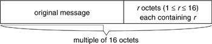
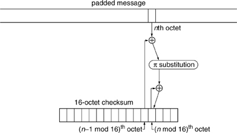
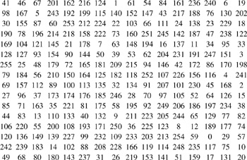
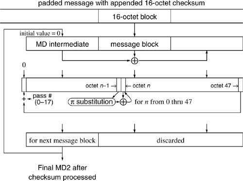

Networking Security Networking Security Networking Security Security Networking Security Networking Security Networking Charlie Kaufman Radia Perlman Mike Speciner Prentice Hall Network Security: Private Communication in a Public World, Second Edition Networking Security Networking Security Networking Security Security Networking Security Networking Security Networking Charlie Kaufman Radia Perlman Mike Speciner Prentice Hall Network Security: Private Communication in a Public World, Second Edition
5.3. MD2
MD2 takes a message equal to an arbitrary number of octets and produces a 128-bit message digest. It cannot handle a message that is not an integral number of octets, though it would be simple to modify MD2 (see Homework Problem 5), or to have a convention for bit-padding a message before feeding it to MD2.
The basic idea behind MD2 is as follows:
The input to MD2 is a message whose length is an arbitrary number of octets. The message is padded, according to specified conventions, to be a multiple of 16 octets. A 16-octet quantity, which MD2 calls a checksum, is appended to the end. This checksum is a strange function of the padded message defined specifically for MD2. Final passÂThe message is processed, 16 octets at a time, each time producing an intermediate result for the message digest. Each intermediate value of the message digest depends on the previous intermediate value and the value of the 16 octets of the message being processed.
Note that we describe the algorithm as if the message is processed three times, first to pad it, next to compute the checksum, and then to compute the actual message digest. However, it is possible to digest a message in a single pass. This is important for machines with limited memory.
5.3.1. MD2 Padding
The padding function (see Figure 5-3) is very simple. There must always be padding, even if the message starts out being a multiple of 16 octets. If the message starts out being a multiple of 16 octets, 16 octets of padding are added. Otherwise, the number of octets (1Â15) necessary to make the message a multiple of 16 octets is added. Each pad octet specifies the number of octets of padding that was added.

5.3.2. MD2 Checksum Computation
The checksum is a 16-octet quantity. It is almost like a message digest, but it is not cryptographically secure by itself. The checksum is appended to the message, and then MD2 processes the concatenated quantity to obtain the actual message digest.

The checksum starts out initialized to 0. Because of the padding mentioned in the previous section, the message is a multiple of 16 octets, say k x 16 octets. The checksum calculation processes the padded message an octet at a time, so the calculation requires k x 16 steps. Each step looks at one octet of the message and updates one octet of the checksum. After octet 15 of the checksum is updated, the next step starts again on octet 0 of the checksum. Therefore, each octet of the checksum will have been updated k times by the time the checksum computation terminates. At step n, octet (n mod 16) of the checksum is computed, but for simplicity we'll call it octet n of the checksum.
Octet n of the checksum depends on octet n of the message, octet (n-1) of the checksum, and the previous value of octet n of the checksum (what it was updated to be in step n-16). (Think of the checksum as "wrapping around", so if n = 0, octet n-1 is octet 15.)
First, octet n of the message and octet (n-1) of the checksum are  'd together. This produces an octet having a value between 0 and 255. Then a substitution is done and the result is 'd into the previous value of octet n of the checksum. 'd together. This produces an octet having a value between 0 and 255. Then a substitution is done and the result is 'd into the previous value of octet n of the checksum.
The substitution is specified in Figure 5-5. The first entry is 41, indicating that the value 0 is mapped to 41. The next is 46, indicating that the value 1 is mapped to 46.

The designers of MD2, anxious to display that they had designed no sneaky trapdoors into MD2 by having carefully chosen a particular mapping function, specified that they chose the mapping based on the digits of π. One way that they could base a substitution on the digits of π was to look at the binary representation of π an octet at a time, using the value of that octet as the next substitution value, unless it was already used, in which case they skipped it and went on to the next octet. We checked, and that isn't how they did it. We're willing to just take their word for it that somehow the numbers are based on the digits of π. We wonder whether anyone has ever bothered to verify their claim. We certainly hope none of you waste as much time as we did trying to figure out how the digits of π relate to the substitution. We could have asked the designers, but that seemed like cheating.
5.3.3. MD2 Final Pass
The final pass of the message digest computation is somewhat similar to the checksum computation. The message with padding and checksum appended is processed in chunks of 16 octets. Each time a new 16-octet chunk of the message is taken, a 48-octet quantity is constructed consisting of the (16-octet) current value of the message digest, the chunk of the message, and the of those two 16-octet quantities. The 48-octet quantity is massaged octet by octet. After 18 passes over the 48-octet quantity, the first 16 octets of the 48-octet quantity are used as the next value of the message digest.
The message digest is initialized to 16 octets of 0.
At each stage, the next 16 octets of the message are taken to be processed. A 48-octet quantity is formed by appending the message octets to the current message digest, then appending the of these two 16-octet quantities.

18 passes are made over the 48-octet quantity, and during a pass each step processes one octet, which means that 18x48 steps are made. It is necessary to know which pass is being made, since the pass number is used in the computation. Both passes and steps are numbered starting at zero. A phantom octet -1 appears before the first octet (octet 0) of the 48-octet quantity.
At the beginning of pass 0, octet -1 is set to 0. In step n of each pass we take octet n-1 and run it through the same substitution used for the checksum, then the result into octet n. After step 47 of each pass, there is a step 48 which sets octet -1 to the mod 256 sum of octet 47 and the pass number. When we have completed pass 17, the first 16 octets of the 48-octet quantity are used as the value of the message digest for the next stage, and the next 16 octets of the message are processed. (So in pass 17, steps 16 through 48 are useless.)
After the entire message is processed, the 16 octets that come out of the last stage is the message digest value. The calculation requires only 16 octets (for the checksum) plus 48 octets of volatile memory plus a few indices and makes a single pass over the data. This is ideal for computation in a smart card (see §10.8 Authentication Tokens).
|